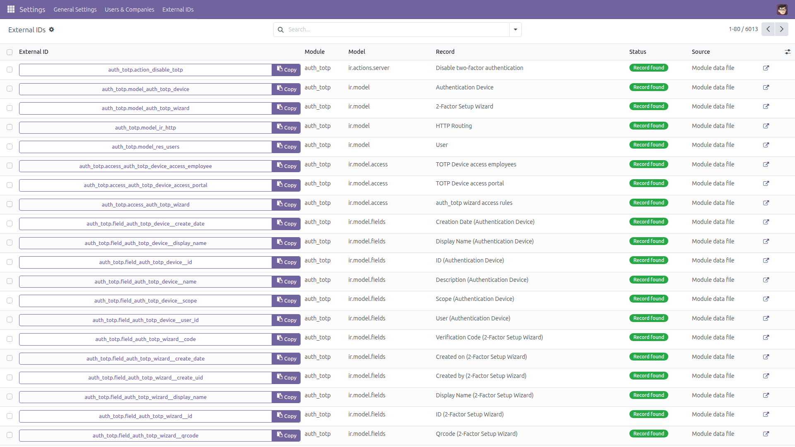
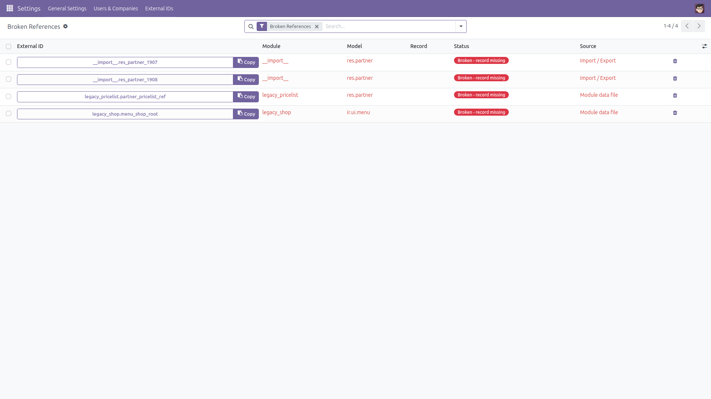
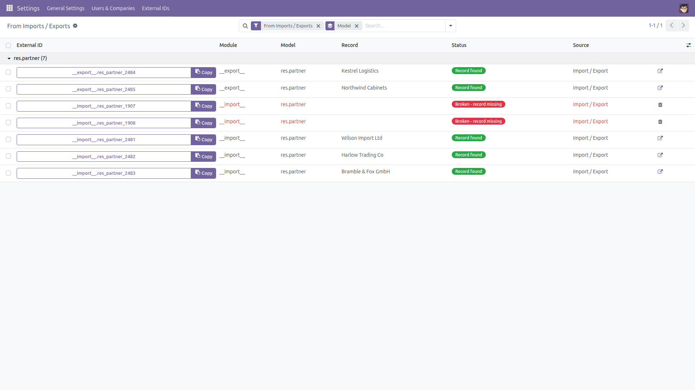
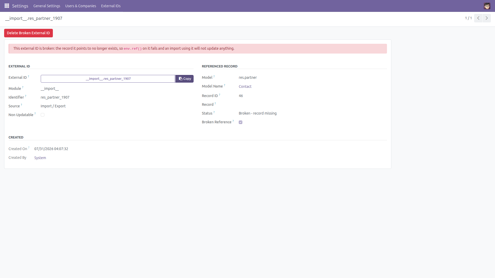
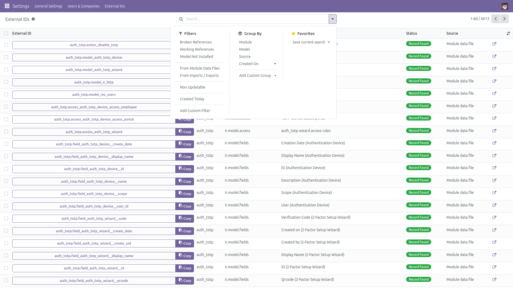

External ID Manager
Find any XML ID — and every broken one
External IDs (ir.model.data) drive imports, data files and env.ref(), but looking one up means switching on developer mode and reading a raw list that shows a model name and a numeric id — never the record behind it. This module adds an administrator screen that resolves the record, shows its name, and flags the references that no longer point anywhere.
Free and open source (LGPL-3), Odoo 14.0 through 19.0.
- Search the way you think — by module, by model, by identifier, by the full
module.name, or by the display name of the record the external ID points to.
- See the record, not an id — every line shows the referenced record’s name, with a button that opens it in its own form.
- Broken references in red — the external ID still exists but its record is gone, so
env.ref() on it fails and an import using it updates nothing.
- Model not installed — entries left by an uninstalled module are shown as unverifiable instead of being wrongly called broken.
- Copy in one click — the full
module.name string, ready to paste into a data file, a spreadsheet column or env.ref().
- Imports versus data files — one filter for what your spreadsheets left behind (
__import__, __export__) and one for what modules declared, plus a “Created On” column and grouping by module, model or source.
- Read-only by design — the only write it offers is deleting an entry that is already broken, behind a confirmation dialog and reserved to Settings administrators.
- No developer mode needed — its own menu under Settings, visible to Settings administrators only.
- Bulk resolution — names and existence are resolved per model, one query each, never one query per line.
Why live external IDs can never be deleted here. Deleting a live external ID silently breaks module upgrades: the next upgrade of its module no longer finds the record and creates a duplicate instead of updating it. That is why this screen refuses to delete anything whose record still exists — and why it also refuses entries whose model is not installed, since nothing can be verified about those.
Screenshots

Every external ID with the record it points to, its status and its source. The screenshots are taken on the series they belong to, so this is what your version looks like.

Broken references: the external ID survived but its record is gone. Only these lines offer the delete button.

What the spreadsheet importer and exporter left behind, grouped by model — live and broken side by side.

A broken entry explains itself and offers the confirmed deletion; a live entry shows Open Record instead.

Ready-made filters: broken references, working references, model not installed, module data files versus imports and exports, non updatable, created today.
Installation
- Copy the module into your addons path, or install it from the Apps list.
- Open Apps, remove the “Apps” filter, search for External ID Manager and click Install.
- Only the standard
base module is required.
Configuration
- No configuration is needed — the screen works as soon as the module is installed.
- Access is restricted to the Administration / Settings group: the model is granted read access only, and the deletion additionally re-checks that group before touching anything.
- Deleting an external ID uses your own rights on
ir.model.data; the module never elevates them.
Usage
- Go to Settings → External IDs → All External IDs.
- Type in External ID to search a module, an identifier or the full
module.name; use Model for a model; use Record Name to find the external ID of a record you only know by name.
- Press the arrow button on a line to open the referenced record, or the Copy button to put
module.name on the clipboard.
- Open Broken References for the entries whose record is gone. Check what each one was for, then delete it with the trash button and confirm.
- Open From Imports / Exports to review what spreadsheet imports and exports created, grouped by model.
- Group by Module, Model, Source or Created On, and export the list to a spreadsheet.
Good to know
- Deleting a record through the Odoo interface already removes its external ID, so broken references come from cascade deletes, from direct SQL, from failed uninstalls or from partially restored databases — not from ordinary day-to-day work.
- The status is computed live from the database, so a very large
ir.model.data table makes the Broken References filter take a moment: it runs one query per model, not one per external ID.
- Searching by Record Name asks each model in turn — at most 1000 models, keeping at most 200 matches in each — so it is slower than the other search fields and can miss matches beyond those caps on huge tables. Every other search is a plain indexed query.
- Entries whose model is not installed cannot be verified, so they are never called broken and never deleted.
- The one-click copy button is on the form view in every supported series, and also inside the list on Odoo 16.0 and above; on 14.0 and 15.0 the clipboard widget of that era does not render properly inside a list, so the list shows the plain identifier there.
- Nothing else is ever written: no record is created, renamed, archived or deleted by this module, and live external IDs are never removed.
License: LGPL-3 · Source on GitHub · Issues and contributions welcome.